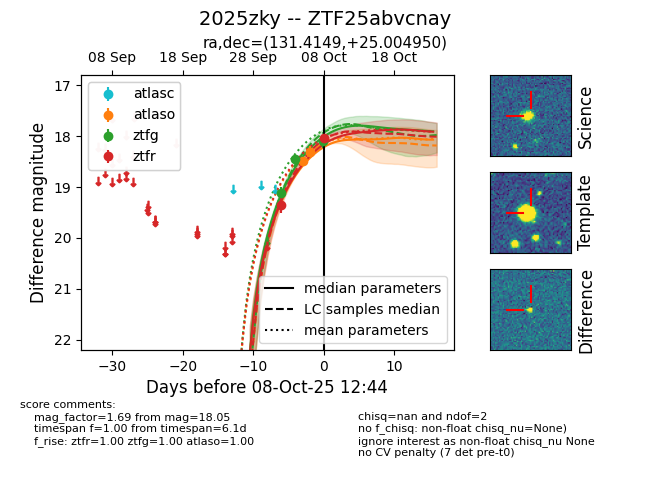
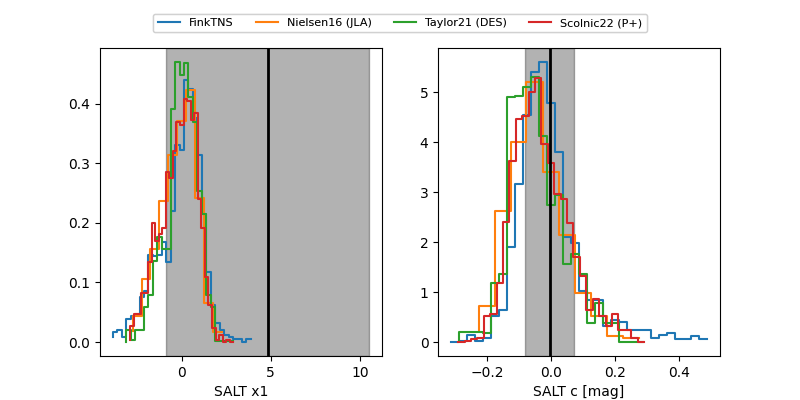

FINK: ZTF25abvcnay
Lasair: ZTF25abvcnay
ALeRCE: ZTF25abvcnay
TNS: 2025zky
YSE: 2025zky
ZTF25abvcnay (ztf,fink)
2025zky (tns,yse)
equatorial (ra, dec) = (131.4149,+25.00495)
galactic (l, b) = (200.2821,+35.33042)


last atlaso=18.30, ztfg=18.10, ztfr=18.05
2 atlaso, 3 ztfg, 2 ztfr detections